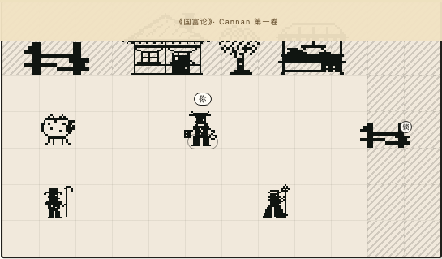
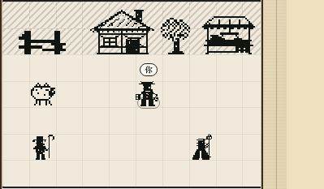
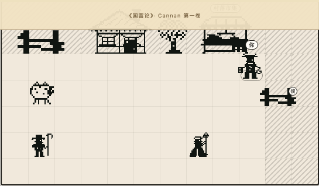
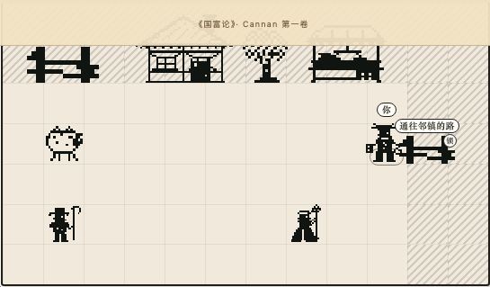

T071 验收 · 可走的世界
图归你判，机器归我担。四张图各回答一个问题就够。
DOM 网格 · 无引擎
机器已经担下的部分 你不用复核，除了想亲手跑
类型 0 错误
单测 306 passed
四道门 e2e 4 passed
改动文件 lint 0 错误
cd /Users/mahaoxuan/Desktop/一本书/product
npx tsc --noEmit && npx vitest run && PW_PORT=3131 npx playwright test tests/e2e/walk-step1.spec.ts
用 3131 端口，不碰你 3000 上正在跑的服务。
门 1 · 一眼分得清 walk-gate1-100.png
人、房、树、羊，一秒内分得清谁是谁？底排两个人脚下有地面，不是踩在边框上？

门 1b · 放大不糊 walk-gate1-200.png
200% 缩放下，像素边缘依然干脆，没有互相压住？

门 2+3 · 走到哪，就是哪 walk-gate3-market.png
方向键把人推到市集后，当前地点标题自己变成市集，没点过任何列表？

门 4 · 锁住的路挡得住 walk-gate4-locked.png
撞上去人停住，并且给出看得见的理由？锁住的路和左上牧场的栅栏能分开？

想亲手走两步 可选
PW_PORT=3131 npx playwright test tests/e2e/walk-step1.spec.ts --headed
有头模式，能直接看见方向键把人一格一格推过去。
我判断错过一次 该记下来
我以为底排两人是齐膝被裁，跟右边路口同一个溢出 bug。到浏览器里量完发现不是：
他们的框在 272px 舞台里结束于 270px，完整在内。真因是脚下直接踩边框、没有地面。
加一行地面（rows 6→7）才对，顺带翻掉一条假通过的断言 —— 原来断言 y: 6
不可走，只是因为当时 6 在地图外。
四张图之外还剩什么 等你一句话
docs/architecture/walkable-world-embedding.md 第 9 节、
design.md 里 D016 还写着 Proposed。
图过了我就把第 9 节收成那四步、D016 改成 Accepted。图不过，现在改就白改。